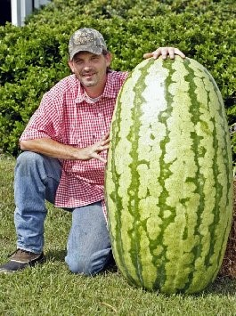
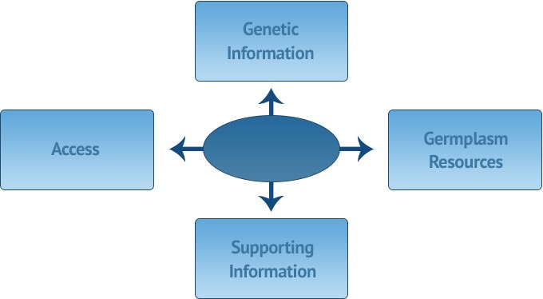

Every time you eat, you enjoy the benefits of selective breeding. Over time, humans have evolved to grow and eat plants. When humans find plants that have certain traits they desire, sometimes they breed selectively for those traits. Because of this, we have plenty of plants with qualities that we love. By the end of this article, you will understand plant breeding, multiple major developments in the field, advancements in the field, and its future, at least according to my sources.

The modern state of plant breeding is characterized by huge strawberries, foods with unusual colors, and completely pest resistant cash crops. Most advancements in this field are similar to these three categories. Wild strawberries before domestication rarely grow past the size of a thumbnail. But there are strawberries as tall as smartphones thanks to plant cultivars (breeders). One such cultivar, with his own brand of immense strawberries(California Giant), had this to say about developments in the field. "The demands for high-quality traits in newly bred cultivars [cultivated plant varieties] are greatly influenced by large producing companies, retailers, and traders, sometimes at the expense of consumer preferences." In layman's terms, this means that the people who bring us these plants many times weigh profit over anything else when breeding for traits. An example of this everyone can relate to is the Red Delicious brand of apple. They have awful taste ratings compared to other apple varieties, but are yet the second most popular variety. This is not to say these apples taste awful, but the flavor aspect has been clearly neglected.
